Data Warehousing for Business Insights
Intro
This section presents a process of data collection, processing and analyzing to provide meaningful business insights. I also provide some theoretical introduction on what tools and techniques need to be applied to make it works.
Data Integration:
- Combining data from different sources and providing users with unified view of them.
- It integrates data from heterogeneous database systems and transforms it into a single coherent data store.
- We can find it helpful in data mining and business analysis.
ETL:
- It can be defined as a repeatable programmed data movement.
- It stands for:
- extract: getting data from different sources.
- transform: filter/map/enrich/combine/validate/aggregate/sort/applying business rules to the data
- load: store data in the data warehouse or data mart. - Data Warehouse (DW) vs Data Mart (DM):
- DW is broadly focused on all the departments. It is possible that it can even represent the entire company.
- DM is a specific business subject-oriented, and it is used at a department level. - ETL process can be applied in making data strucutred from data lake keeping unstructrued data from different sources:
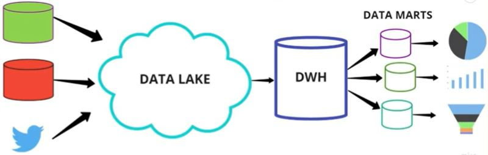
ETL designing:
- Operational db:
- we don't go to an operaional database directly as we don't want to weigh its performance down with analytical functions,
- operaitonal db is only resposible for transactions saving which cosumes a lot of performance power. - Flat files (CSV, JSON, XML):
- extracting data from operational db like a snapsot with additional meatadata like timestamp, system name etc.
- extracting flat files and working with them ensures any operaional db perfomrance issue risk. - Raw database:
- loading data as it is in the flat files without any business logic applied yet,
- the purpose is to be able to check if the data makes sense, for instance if the user name is ok, or if the zip-code has an expected format, if the commas is in a wrong place etc,
- we perform some QA check on the fields matching, if some data don't fall into inappropriate db field,
- here, we don't apply any transofrmation logic as we want to test pure data, otherwise it would be hard to debug some issues if they come from either the logic or data itslef,
- we can move on with some logging here to track what files has been loaded, how many rows etc. - Staging database:
- here we apply business logic, some mappings, tandarization, deduplicaiton, denormalization to transform the data up to business requirements,
- QA perfomed after transomration applied - we can be chekcing if the amount of distinct records is still as expected after applying some aggregating funcitons,
- basically, QA at this stage confirms if I can trust the data or not,
- we can also here do some logging on how many records have been loaded, what stred procedures were run, if they were successfull or not, how long they work. - Data Warehouse:
- final destination of ETL,
- here we proceed with further data analysis,
- can be a back-end of Tableau dashboard,
- consists of fact tables and dimension tables. - Here is the schema that shows the pahses of ETL:
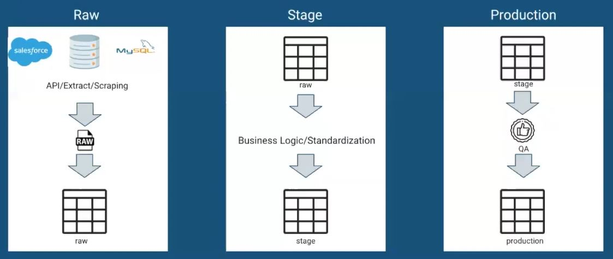 source: Seattle Data Guy
Additonal things for ETL:
- Data QA,
- Error hanlding and logging - tracking when etl fails, tracking why is that - it's important for the maintenance,
- Dashborad for logs visualization,
- Data linage and data catalog - tracking fileds dependencies,
- Metadata database - tracking pipelines dependencies.
QA on database:
- We may want to refer to previous data.
- We can perform many checks simply with SELECT queries.
- We can perform following checks:
- Categorical checks - when we know a field has a very specific value.
- Null checks - depending if the fileds accept ones.
- Aggregate checks - counting records both in raw table and prod table and comparing the results. It may appear thet some records in prod are missing and we can thind the mission one in the raw table. These kind of changes can be a result of accidental removal throughout the process.
- Anomaly checks - test for data that doesn't make sense - f.e. average values is lower than minimum value.
- QA for db is not as such developed and standardized as for app's code. Most ofthen, in order to get app tested out, the testing tools and environments peel away dependency layers such as databases. This means a traditional QA unit testing practices are designed to overlook the databases just to get focused on examination of the code itselft.
Data Lake:
- Can store different forms of data:
- structured data from relational databases (rows and columns),
- semi-structured data (CSV, logs, XML, JSON),
- unstructured data (emails, documents, PDFs),
- binary data (images, audio, video). - Can be both established on-premise or in the cloud.
- There is also a data swamp which is unmanagable and inaccessible or low-value-providing data lake.
ELT:
- It stands for Extract, Load and Transform.
- This process first loads the data into the target storage and then leverages the target system to do the transformation.
- It makes sense when target system is based on high-performace engine like Hadoop cluster.
- Hadoop clusters work by breaking a problem into smaller chunks, then distributing those chunks across a large number of machines for processing.
Data Ingestion:
- It's the process of obtaining and importing data for immediate use or long-term storage in a database.
- To ingest something means literally to take something in or absorb something. Data can be streamed in real time or ingested in batches.
Db vs DW
- Db:
- mainly for transactional databases,
- many inserts and updates or deletes,
- for live apps,
- normalized,
- saves space,
- limits possible performacnce and redundancy issues,
- mainly for operational purposes. - Dw:
- centralizes and standardizes all of the data from either company's or third party's applicatons,
- for analytical purposes separating it from transactional systems in order to keep the performance,
- consists of fact tables that groups all transactions,
- consists of dimension tables with which we can break down transactions for example by category/regiona and sum up the sales,
- used by analytical teams to quickly select the data without joining tables and understanding whole relationship logic.
Fact Table and Dimension Table:
- Fact table is a central table of the star schema in a data warehouse. It stores quantitative information for the analysis.
- Fact table being kept denormalized in order to combine multiple tables into one so that it can be queried quickly.
- A fact is every event that can undergo analysis. Facts have measures, for instance a transaction (fact) may have 2 measures (value, units sold) - numerical or boolean.
- A fact table works with dimension tables. While the fact table holds the data to be analyzed, the dimension table stores data about the ways in which the data in the fact table can be analyzed.
- Here is how we can visualize the dependecy between facts and dimensions:
SELECT salary FROM employees WHERE country IN ('Poland', 'Germany', 'France')-salaryis one of facts andcountryis one of the dimensions. - Thus, the fact table consists of two types of columns:
- foreign key columns that joins dimension tables (Time ID, Product ID, Customer ID for example below),
- measure columns containing quantitative data being analyzed (Unit Sold). - Here is the example of fact table. Every sale is a fact that happens, and the fact table is used to record these facts:
source: searchdatamanagement.techtarget.comTime ID Product ID Customer ID Unit Sold 4 17 2 1 8 21 3 2 8 4 1 1 - Dimension table:
source: searchdatamanagement.techtarget.comCustomer ID Name Gender Income Education Region 1 Brian Edge M 2 3 4 2 Fred Smith M 3 5 1 3 Sally Jones F 1 7 3 - In the above example, the customer ID column, in the fact table, is the foreign key that joins with the dimension table. Let's have a look at fact table's 2nd row:
- row 2 of the fact table records the fact that customer 3, Sally Jones, bought two items on day 8.
- We can put table structure through:
Normalization Denormaliaztion Used to remove redundant data. Used to combine multiple tables for quick querying. Focuses on clearing the database from unused data. Focuses on achieving the faster execution. Uses optimized memory. Causes some sort of wastage of memory. Used where number of insert/update/delete operations are performed and joins of those tables are not expensive. Used where joins are expensive and frequent query is executed on the tables. Ensures data integrity i.e. any addition or deletion of data from the table will not create any mismatch in the relationship of the tables. Doesn't ensure data integrity. - DWH structure where we have denormalized fact table (or a few of them) containing measures and foreign keys to denormalized dimension tables is called star schema.
- DWH structure where we have denormalized fact table (or a few of them) containing measures and foreign keys to normalized dimension is called snowflake schema.
Slowly Changing Dimensions:
- They are dimensions for which attributes change slowly over time due to business needs.
- Slowly over time means changes happen occasionally rather than on a regular schedule.
- We can apply different approaches:
- type 1: overwriting the value with the new one and not tracking the historical data;
- type 2: preserving the history by creating another records with updated value and unique primary key - we can put anothe column with versioning;
- type 3: preserving the partial history where we create a pair of attributes to track current value and previous one;
Columnar databae:
- In relational databases, tables are defined as an unordered collection of rows.
- However, columnar database stores data in columnar sequence instead of row's.
- Here is employees table:
rowid NrPrac Imie Nazwisko Pensja 001 10 Alicja Zielinska 5200 002 11 Bogdan Wrona 4900 003 12 Czesław Kowalski 5600 004 114 Dominik Wrona 5200
source: if.uj.edu.pl
- in columnar store, above data looks like following:10:001; 11:002; 12:003; 114:004; Alicja:001; Bogdan:002; Czesław:003; Dominik:004; Zielinska:001; Wrona:002,004; Kowalski:003; 5200:001,004; 4900:002; 5600:003;
source: if.uj.edu.pl
- where the first line contains the values of the whole column namedNrPrac
- the same for the rest of columns,
- attribute's value indicates specificrowid.
- When quering database about one or tow columns then a relational database's engine needs to read all records anyway. It slows down the overall performance. In columnar database, engine read only columns that we query. We fetch data fast and only that data we need. On the other hand, any record operations are very slow in a columnar database.
- Becasue fact tables in data warehouses are often long (many rows) and wide (many columns) and their data doesn't change while OLAP, they are being stored in te columnar form.
Data Warehous (DWH) desing:
- Designing DWH we need to pay closer attention to business requirements of further reporting.
- Data dimensions and granuality of data needs to be adjusted to reports that will be issued based on the DWH.
- The granuality depends on business requirements. In sales, besides price and units sold, we can associate transaction fact with foreign keys to dimensions as time, product, shop, salesman and even more. The more dimensions, the more foreign keys, the more detailed analysis in the OLAP.
- Dimensions need to follow granuality, no the other way around.
DWH working modes:
- Operational or analytical mode:
- operations limited only to analytical queries,
- no for any data or table schemas modifications,
- data in DWH stays unchanged. - Modification mode:
- authorized users ingest the data into DWH,
- it can be done automatically on specific time,
- there can be also actualization of indexes perfomed,
- analytical users loses connection at time of DWH modificaiton,
- any schamas modification may pose a danger for any predefiend queries and report.
Query optimalization:
- DWH is espacially optimized for reading operations.
- To keep high level of optimalizaton we should be avoiding performing one operation many times but we want to redefine query to run it only once instead.
- Here is unefficeint way to query with WHERE clause:
SELECT ... FROM ... WHERE X AND P1 SELECT ... FROM ... WHERE X AND P2 ........................ SELECT ... FROM ... WHERE X AND Pn
- as we can see X condition repeateas itself many times in WHERE clause,
- we can take condition X as general condition put on the data,
- applying that X condition reduces data set into a smaller sub-set,
- instead of putting X condtion with every select we can put it once in the materialized view:
CREATE MATERIALIZED VIEW my_mat_view AS SELECT ... FROM ... WHERE X
- we obtain subset resulting from filtering data set into sub-set that is in line with X condition,
- we can then proceed with further variable conditions: P1, P2, Pn:SELECT ... FROM my_mat_view WHERE P1 SELECT ... FROM my_mat_view WHERE P2 ........................ SELECT ... FROM my_mat_view WHERE Pn
- the main difference between a materialized view and a regular view:Materialized view Regular view When calling, it references to outcome is physically saved in the system. When calling, it performs hidden query execution. It's getting refreshed automtically. There is no automated refreshing.
Features
App includes following features:
Demo
The process steps:
- CSV as data extracts from different systems.
- Python with Pandas for ETL (Extract, Transform, Load) process.
- Data Warehouse (MS Access/SQL Server).
- Share Point lists for the data back-up.
- Tableau for the data visualization.
- Server to get dasboard published for stakeholders.
- Business analysis.
- New data coming in.
- Go to step 1.
Workflow

Python
ETL:
- Getting all of the flat files in the current directory and consolidating them into one Pandas dataframe.
combined = pd.concat(dfs) - Assigning a random Region for exercies purpose:
import random
regions = ['AP', 'EMEA', 'AMS', 'LAC', 'NA']
combined['Region'] = combined['Region'].map(lambda x: random.choice(regions)) - Replacing values based on the condition in lambda function.
combined['Company'] = combined['Company'].map(lambda x: 'ABC' if x in ['ZXC', 'XXX', 'YYY'] else x) - Filling up blanks based on the condition for a values in the another column.
combined.loc[(combined['Status'] == 'Closed') & (combined['Request quality'].isnull()), 'Request quality'] = 'not evaluated' - Setting data types to specific column.
combined['Request nr'] = combined['Request nr'].astype(str) - Saving consolidated dataframe into excel file:
combined.to_excel('combined.xlsx', index=False)
Tableau
Sales dashboard:
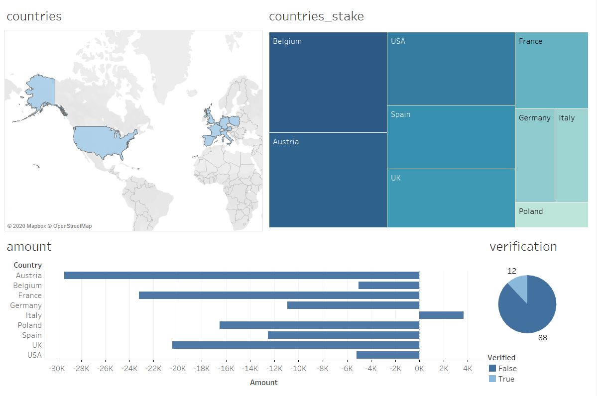KPI dashboard:
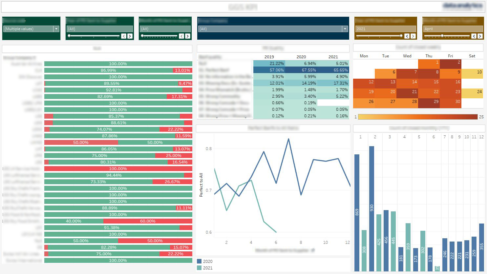Joins, Blending, Unions
- As we know we have two kinds of tables:
1. Fact table - a set of data containing measurements, metrics or facts of some business processes. Facts correspond to measures to Tableau.
2. Dimension table - a set of descriptive data that is most-likely text-based. - We can combine data in different ways:
1. Joins - combining two data sets horizontally on a shared dimension.
- left join of two tables (dimension and fact):
source: OneNumber LLC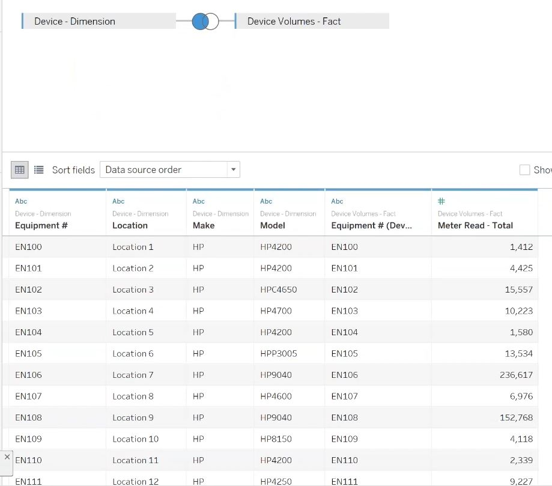
- when joining we need to be careful if number of jouned records is higher than number of records in the fact table.
- as it is the left join applied, we get everything from dimensions even though there might be no fact registered for particular record - in such case we get Null assigned.
- full outer join on two fact tables:
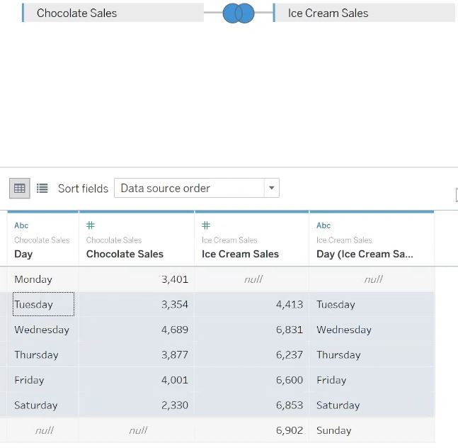source: OneNumber LLC
- as we can see there might be no sales for ice creams on Monday and no sales for chocolate on Sunday but full outer join takes all records even though there might be no matches.
2. Blending:
- always a left join.
- we can mix the data from different sources on a common dimension.
3. Unions:
- combining data sets vertically on shared dimensions.
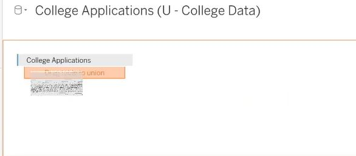source: OneNumber LLC
Tableau main elements:
- There are two main fileds:
- Dimensions - categorical field.
- Measures - numerical fields to be aggregated.
- Fileds can be presented in two ways:
- Discrete - simply headers - they slice up the data giving them labels.
- Continuous - they are displayed as axis - number lines with continuosus range of values without the poauses.
Calculation in Tableau:
- Generally speaking, we can enrich data source using calculations.
- There are following types of calculation in Tableau:
- basic row level,
- basic aggreagate,
- Table calculation.
- Level Of Details.
Basic row level calculation:
- Having below calculation:
if YEAR([PO Sent to Supplier]) = 2019 Then [Value] End
- we can put it into the text shelf getting: 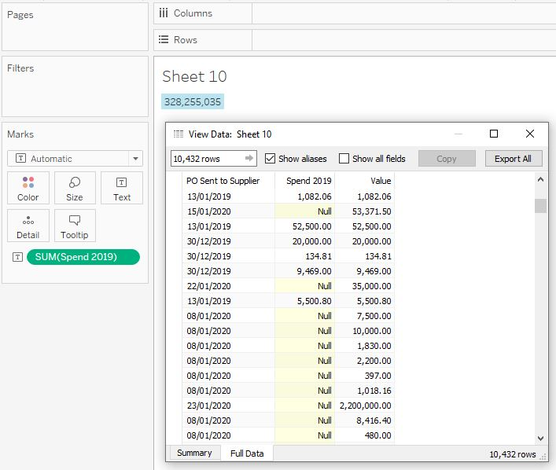 - In the data view, we can see that those records that fulfills if condition gets [Value]. Those records that don't fulfil the condition (2019) get Nulls.
Basic aggregate:
- Having below calculation:
SUM(
IF YEAR([PO Sent to Supplier]) = 2021
THEN [Value]
END
)
- we aggregate values from all records that fulfills the condition into a one record value of SUM().
Table Calculation:
- This is a kind of calculations thst is performed on aggregated measures that Tableau sees in the virtual table.
- We can call them as a second pass aggregation like runnin totals (accumulative sum), moving average, percent of totals and so on.
- In other words, calculations are made based on the result that comes back from a data source. Tableau issues query to the data source and returns a set of aggregated results. Then, Tableau proceed with table calculation inside against that set of aggregated result.
- There are some factors that affect table calculations:
- direction (left to right or top to bottom),
- scope (table - everythin in the view, pane - subgroups, cell - row and column intersection),
- layout (dimension in shelf - level of detail),
- filters. - Here is the example of getting percent differene of
SUM(Value)for a particular month:
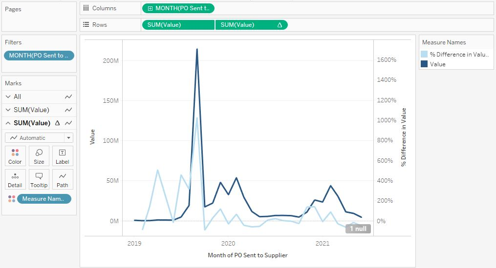
- here are the figures when we can see how percent diff works:

- each row evaluates the change of current value in comparison with the previous one,
- aggregated value in Feb-19 fell from 517k to 68k with is drowdawn in - 88%,
- as we can see percent differnce is yet another calculation on aggregated measure ofSUM(Val).
- we can also visually recognize that table calculation is applied to a measure by the triangle icon within a pill.
LOD and LOD Expressions in Tableau:
- Defines granuality of the data.
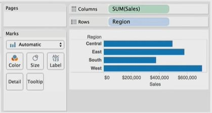source: Tableau Software
- in above case the level of detail of the visualization is 'region' only.
 source: Tableau Software
source: Tableau Software
- in above case the level of detail is more complex as we add more measures and each mark is the combination of two: 'category' and 'region'. - Different shelves have different effect on the LOD of the view apart from dimensions themeselves.
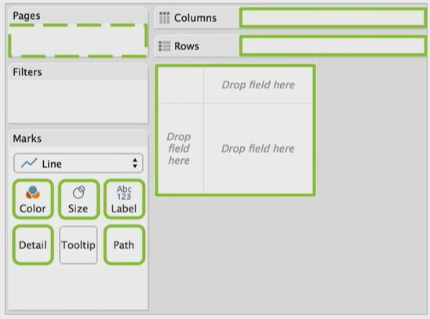source: Tableau Software
- LOD is defined by dimensions put in the highlighted shelves.
- filter doesn't impac the LOD. - LOD Expressions give a control over the level of granuality. They can be performed at a more granular level (INCLUDE), a less granular level (EXCLUDE), or an entirely independent of view level (FIXED).
- Granuality - each individual distinguishable piece of data.
- Level of Details:
- We can conclude from above comparison that the higher aggregation, the lower granuality and vice versa.High Level Low Level Excludes details Includes details Summary Detailed view Less granular More granular More aggregated Less aggregated
- Level of detail in Tableau is what is shown on the view. - Viz LOD:
- when we drag a measure to a shelf it gets aggregate to SUM in the view by default:
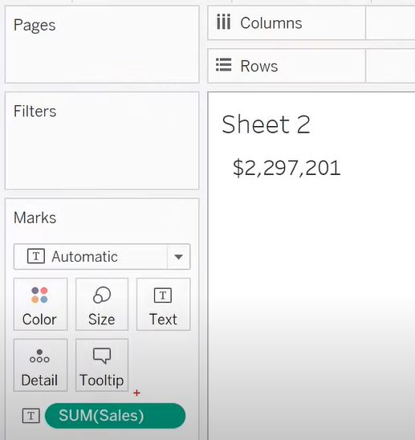source: sqlbelle
- but we can be more precised by dragging one dimension to another shelf, receiving totals at the level of Category:
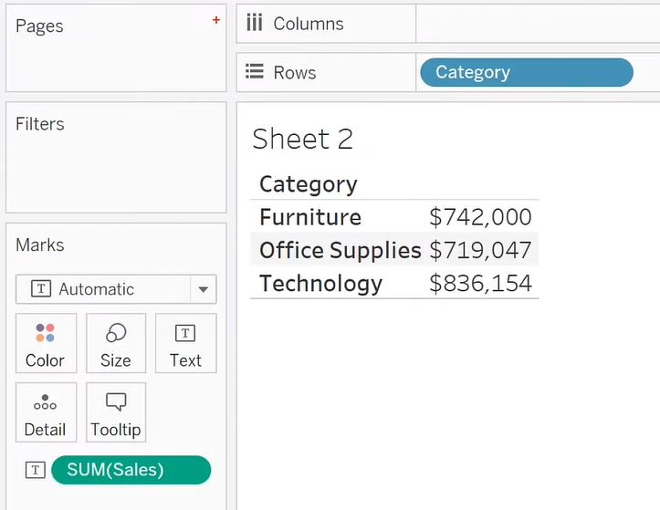source: sqlbelle
- the more dimensions we add, the more granular numbers become.
- Viz LOD:
MAX([Sales]). - Custom LOD with LOD Expression:
- syntax:
{TYPE [Dimension List]: AGGREAGATE FUNCTION},
where TYPE might be:
- FIXED: independent of view returning a scalar (a singular value,)
- EXCLUDE: minus from view,
- INCLUDE: add to view,
- and [Dimension List] is optional.
- FIXED example:
{FIXED : SUM([Sales])}
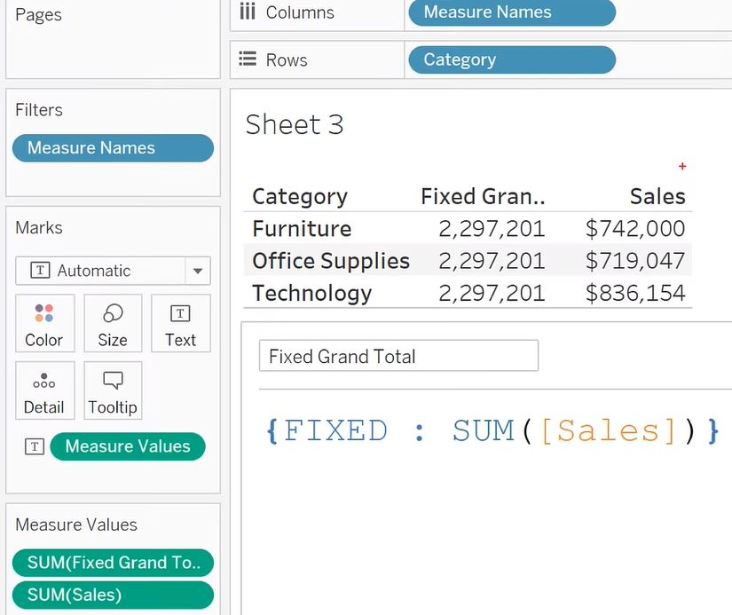source: sqlbelle
{ FIXED [Manufacturer]: MAX([Sales]) }
- we can read this as following: for each manufacturer count max sales.
- this computes at the Manufacturer level regardless of what viz LOD is.
- MAX([Sales]) will be fixed on a particular Manufacturer regardless of dimension, filters and the view overall.
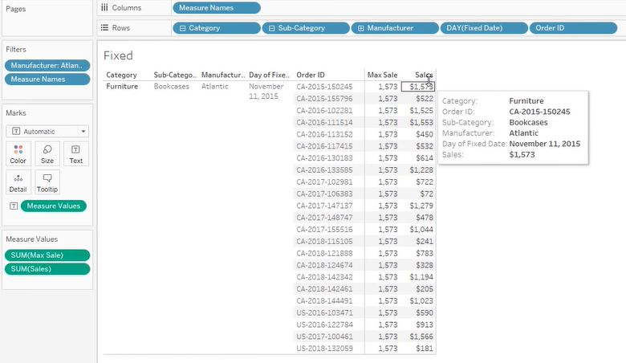source: Vizual Intelligence
- FIXED calculations are applied before dimension filters:
- FIXED level of detail doesn't care about what else is in the view, taking into account only passed dimension or not as it's optional.
- example:SUM([Sales]) / ATTR({FIXED : SUM([Sales])})
- having following calculation on one shelf in a view along with [State] dimension on a different shelf, the calculation will give you the ratio of a state’s sales to total sales.
- if you then put [State] on the Filters shelf to hide some of the states, the filter will affect only the numerator in the calculation. Since the denominator is a FIXED level of detail expression, it will still divide the sales for the states still in the view against the total sales for all states—including the ones that have been filtered out of the view (source: Tableu help).
- another example:
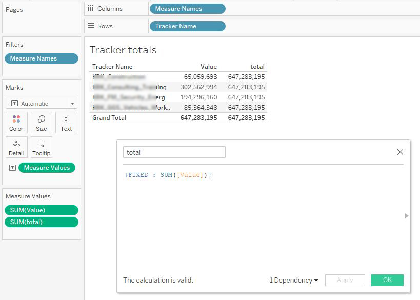
- when filtering out on [Tracker Name], the calculated total stays the same as if it got fixed:

- Fixed Table-Scoped LOD
- There is no TYPE and no [Dimension List]:
[Sales] - {AVG([Sales])}
- By calculation above we can compare store sales for each individual store to the average of sales for all stores.
- When the outcome is negative for a particular store then its sales is less than average overall sales.
- Here is the another example of comparing max year of slaes with the year of each record:
IF {MAX(YEAR([Order Date]))}=YEAR([Order Date]) THEN [Sales Value]
ELSE 0
END
- when record's year doesn't equal max year from entire dataset then each record gets 0 as the result from the calculated field.
- Just to sum this up, when no FIXED, INCLUDE, EXCLUDE then { } implies FIXED on everything inside. - EXCLUDE example:
{EXCLUDE [Category]: SUM(Sales)}
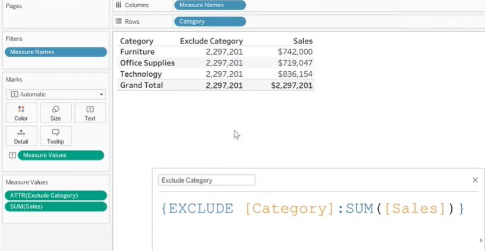source: sqlbelle
- We want to exclude 'Category' dimension from the view and calculate the sum of Sales (like it is from the high level without any detailes provided by a dimension).
- EXCLUDE LOD is being affected by dimension filters and is getting detailed while more dimensions put in the shelves.
- The same can be done with FIXED LOD:{ FIXED: SUM([Sales]) }
- We can also be excluding more dimensions:
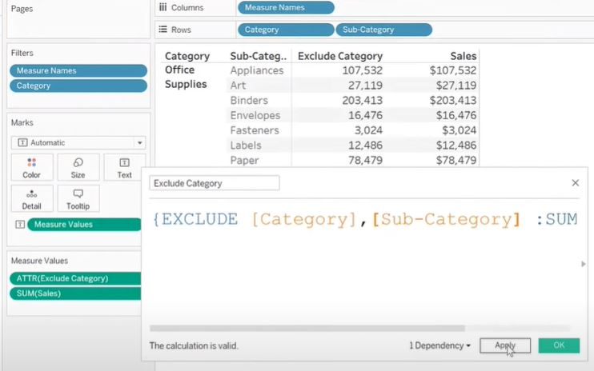source: sqlbelle
- INCLUDE LOD:
AVG({INCLUDE [Region]: SUM(Profit)})
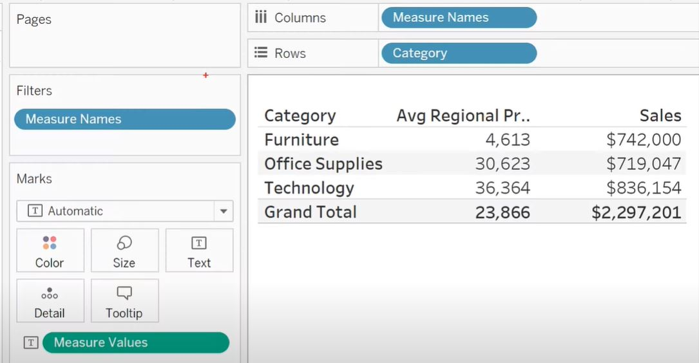source: sqlbelle
- INCLUDE puts more dimensions (more details) in the view and calculates aggregation on them.
- To the 'Category' dimension we want to include 'Region' dimension and perfom above calculation on it.
Order of operations in Tableau:
- Here is the hierarchy of operations where we can see that FIXED LOD is not being affected by dimension filters but INCLUDE/EXCLUDE are so.
 source: help.tableau.com
source: help.tableau.com
- Context filter affects FIXED LOD, here is how to set it up:
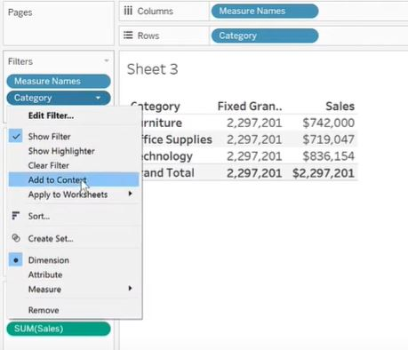source: sqlbelle
- Analogously to SQL:
- measure filters are equivalent to the HAVING clause in a query,
- dimension filters are equivalent to the WHERE clause.
Calculated Fields:
- We can embded if condition withing AGGREAGATE functions.
SUM(
IF [Item Quality] = "Highest Quality"
THEN 1
END
)
/
SUM(
IF [Item Quality] <> ""
THEN 1
END
)
- Every record that contains "Highest Quality" gets 1 in numerator and 1 in denominator. One divided by one gives one which we can see in the Perfect to All field for each record.
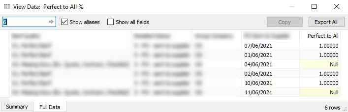
Every record that contains something different than "Highest Quality" gets Null in numeratior and 1 in denominator. Null divided by one gives Null. Overall outcome is the sum of all ones by number of records affected which gives us average percentage of "Highest Quality" to all records.
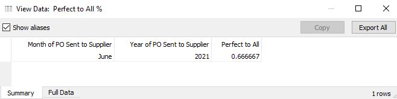 - We can then put the calculated field into a shelf to get ratio in the view:
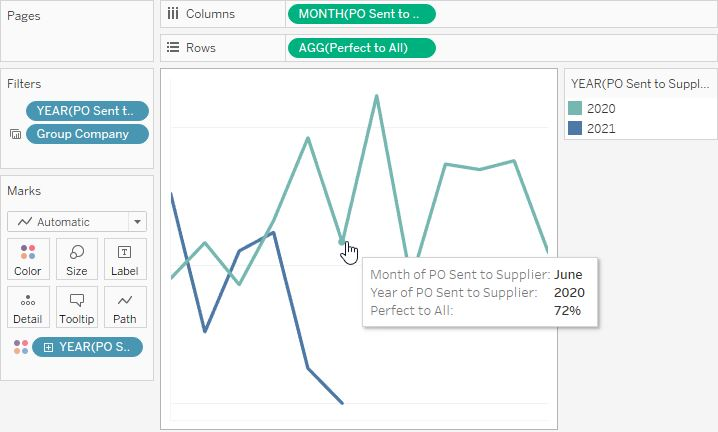 - We can be embedding ifs:
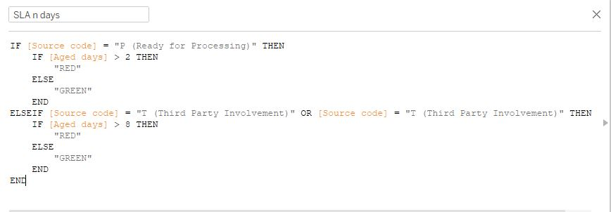
Parameters:
- Parameter is a variable that can be used across the workbook.
- It is a field that accepts input from the end user who takes control over the visualization.
- Here are some cases when the parameter can be used:
- numeric thresholds,
- what-if analysis,
- dynamic field, axis, titles,
- filtering across different data sources,
- top N. - How to set it up:
1. Creating parameter.
2. Placing parameter in either a calculated field, reference line, set or filter.
3. Putting an input field to the view. - For example I can be asking user about 'Value Threshold'. Then I need to create a parameter that accepts integer, showing the input field:
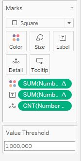
We can put the variable in the calculated field:
IF SUM([Value]) >= [Value Threshold]
THEN "OK"
END
Having set calculated field, we can drag and drop it into color shelf:
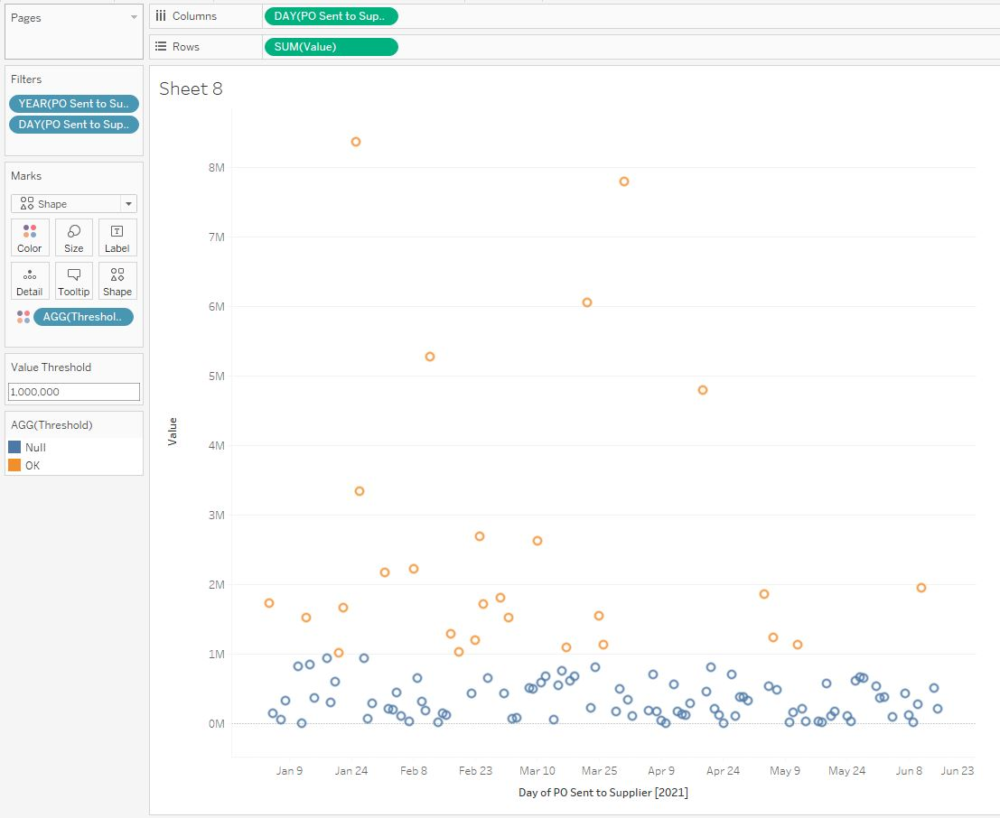
- as we can see, there is the color distinction for values > 1,000,000.00 - And here is another example of a dynamic dimension:
- parameter (Select Dimension):
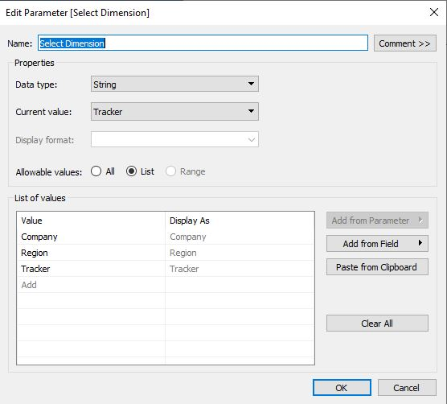
- calculated field (Dynamic Dimension):
CASE [Select Dimension]
WHEN 'Company' THEN [Group Company]
WHEN 'Region' THEN [Region]
WHEN 'Tracker' THEN [Tracker Name]
END
- each selection of the parameter in [Comapny, Region, Tracker] will reflect with different dimension on Rows shelf (due to calculated field):
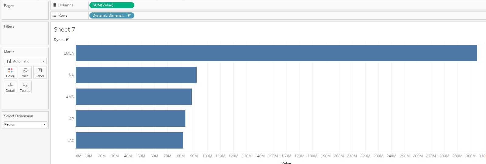
Color shlef:
- We can use claculated field in order put it into the color shelf:
IF AVG([Discount]) > 0.05 THEN 'High'
ELSE 'Low'
END - It differentiates continues measures:
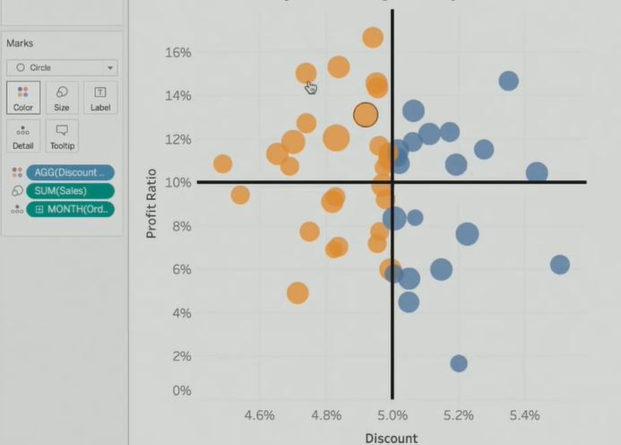source: Jeffrey Shaffer
Row Level Security:
- A kind of the user filter that restricts access at the data row level.
- In the filter we have to specify which row can be visible for any given person on the server.
- Example usecase:
When publishing the report, you want to allow each regional manager to see only the data relevant to his or her region. Rather than creating a separate view for each manager, you can apply a user filter that restricts access to the data based on users’ characteristics, such as their role. - In order to apply RLS we can create a dynamic filter using a calculated field that automates the process of mapping users to data rows. This method requires that the underlying data includes the security information for filtering. For example, if you want to filter a view so that only supervisors can see it, the underlying data must be set up to include user names and specify each user’s role.
- For example we have some regions and we want to assign a supervisor to each of them:
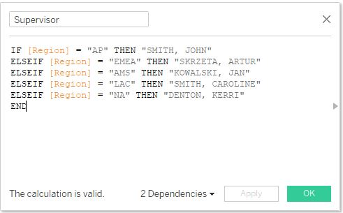
That way we keep security information within the dataset.
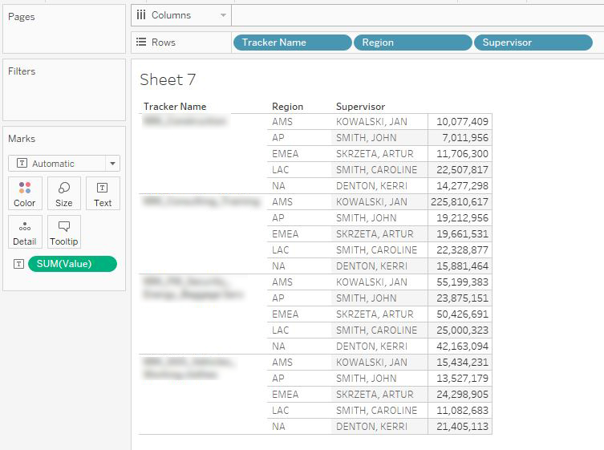
In order to get the data filtered by the current user (supervisor) who actually views the analysis we need to create the calcualted field making usage of a so-called user function:
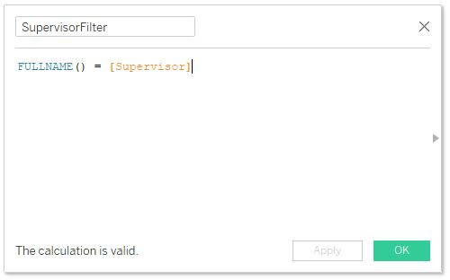
so that we can put it into the filters shelf having only TRUE selected. Here is the final look of the view:
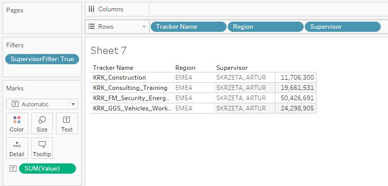
In fact, we can get rid of the Supervisor pill from rows shelf.
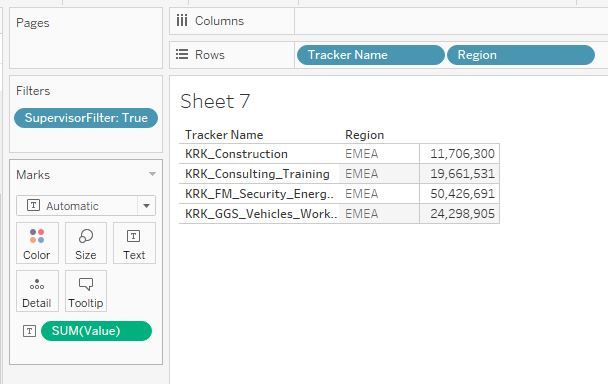
That way, when publishing the analysis only relevant ro superviosr regions will be displayed without having to create different views for each reagion (supervisor).
Sets
- Custom fields being a subset of a specific field that we can create based on certain condition.
- Example:
- let's say we want to visually separate top 3 regions with the highest EUR spend:
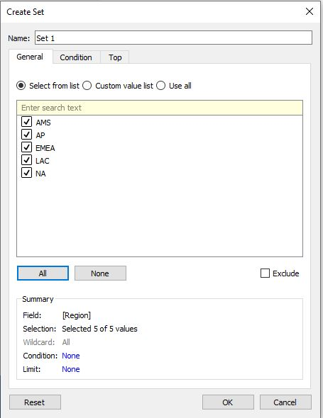
turning the top option on other numeric field:
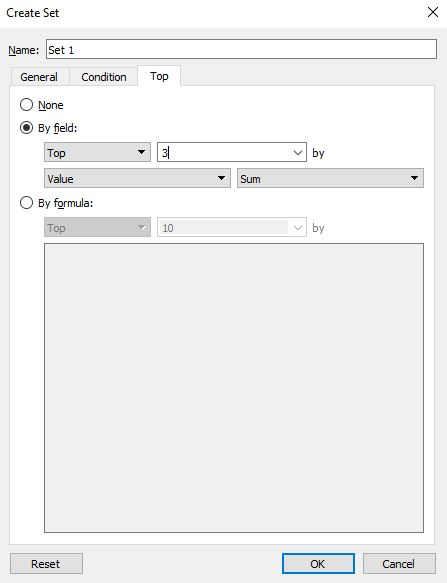
newly-created set in placed in the set section on side bar from which I can drag and drop on color shelf making top 3 regions distinct:

Bins
- Creating bins helps us to cluster measures into customizable size of ranges.
- Getting bins on a measure, we convert numerical variable (measure) into categorical variable (dimension).
- Perfect solution if numerical data is a type of float or double.
- Here is the perfect example when we want to change this distribution of ages:
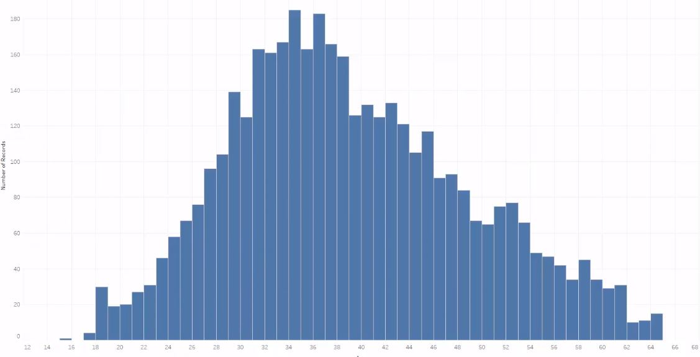source: Art of Visualization
and to get the Age bins in the size of 5:
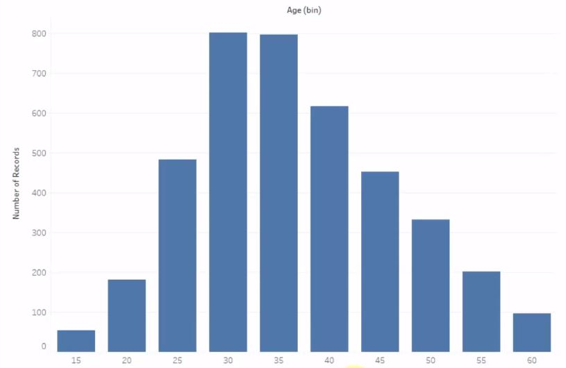source: Art of Visualization
- in the example above 15 is inclusive, and 20 is not etc.
Write Back Extension:
- The functionality that allows to input data through Tableau and store it in the data source for a future reference.
- We can go with 2 versions:
- free: we can save the data into a google spreadsheet,
- commercial: we can save the data into a database. - The extension works on dashboard level which has at least one sheet laid. It can be dragged from the objects section and then chosen from the extensions gallery. Once downloaded we can load it up to the dashboard picking it up from the browsing window. Lastly, configuration window shows up in order to proceed with the extension's details.
Conclusions:
- Python script combines flat files into one Tableau input.
- In this case I use static source which is CSV flat files (batch processing).
- However data pipelines are built also for real-time sources where target system requires constant data update (stream processing).
- Data pipeline can route the processed data into another applications like Tableu for building dashboards.
- Once dashboard built, there is the Tableau option for sending it into server.
- Once published, we can perfrom Business Analysis.
- Making good business decisions based on BA leads to process improvements.
- Process improvements generates new data that can undergo the Data Warehousing all over again.
- Data Warehouse is a great concept for monitoring business processes and continuous improvement implementation.
- Taking conclusions from the analysis that can improve business perfomance.
Setup
Following installation required:
pip install pandasTableau